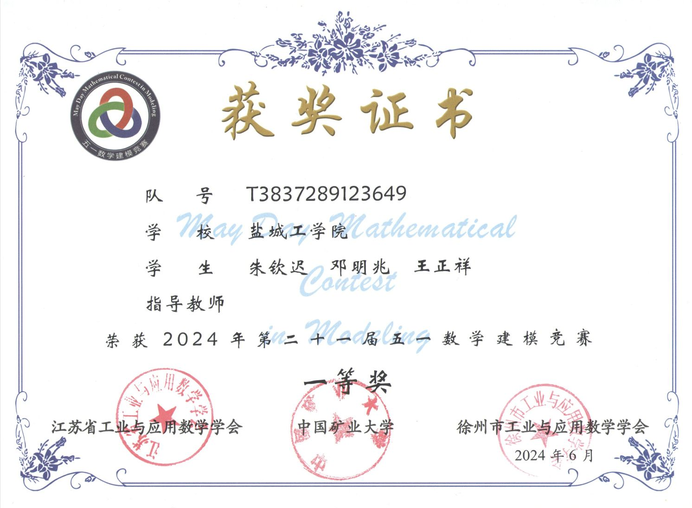

Certificate Details
荣誉信息
- 获奖等级
- 一等奖
- 论文题目
- 未来新城背景下的交通需求规划与可达率问题
- 参赛题号
- B题
- 参赛组别
- 本科组
- 参赛学校
- 盐城工学院
- 参赛成员
- 朱钦迟、邓明兆、王正祥
- 参赛队号
- T3837289123649
- 颁发日期
CERTIFICATE RECORD · 2024
第二十一届 · 本科组 · 一等奖

Certificate Details
About the Competition
五一数学建模竞赛是由大学生自发组织的全国性数学建模竞赛，年参赛规模超过一万人，覆盖全国31个省、自治区和直辖市以及5个国家。赛事于2024年入选江苏省普通高校本专科生学科竞赛省级赛事目录。
竞赛题目主要取材于工程技术、经济管理和社会生活中的实际问题，不预设标准答案。2024年第二十一届竞赛共有5834支代表队报名，收到有效论文4836篇；经过初评、网评、会评和复审，评选出一等奖246篇、二等奖752篇、三等奖1229篇、成功参赛奖2551篇，获奖结果于2024年7月1日正式公布。
Modeling Approach
论文以交通需求的期望可达率最大化为目标，围绕不同规模路网、突发路段失效、道路容量限制和新建路段选择，构建了由需求分配到网络规划的四阶段模型。
以任意一条路段发生突发状况为情景，建立基于遗传算法的线性规划模型，并结合整数规划计算起终点交通需求的可达率，在约束条件下筛选合理路径与交通量分配方案。
将模型扩展至包含42个节点的大型交通网络，分析任意5条路段发生突发状况时的需求分配，通过遗传算法搜索期望可达率更高的路径组合，并利用稳定性检验评估结果。
在大型路网模型中进一步加入路径容量约束，采用线性规划与整数规划协调路径选择和交通量分配，使方案兼顾网络可达率与道路实际承载能力。
建立决策变量矩阵与交通流量矩阵，结合图论、网络流模型和 Dijkstra 最短路径算法评估候选新建路段组合，按整体可达率排序并给出优选建设方案。